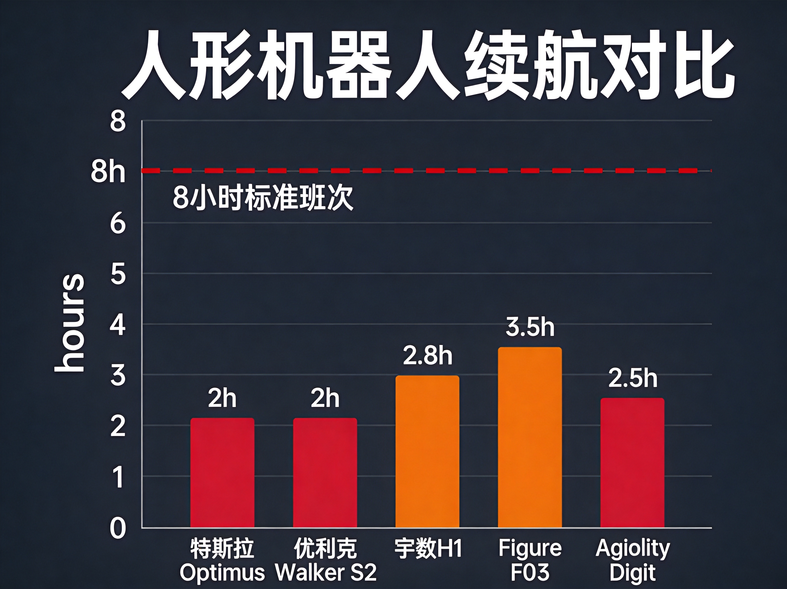
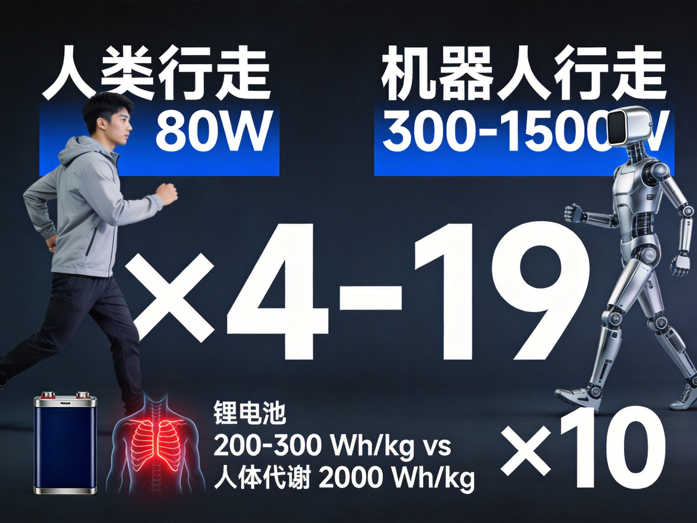
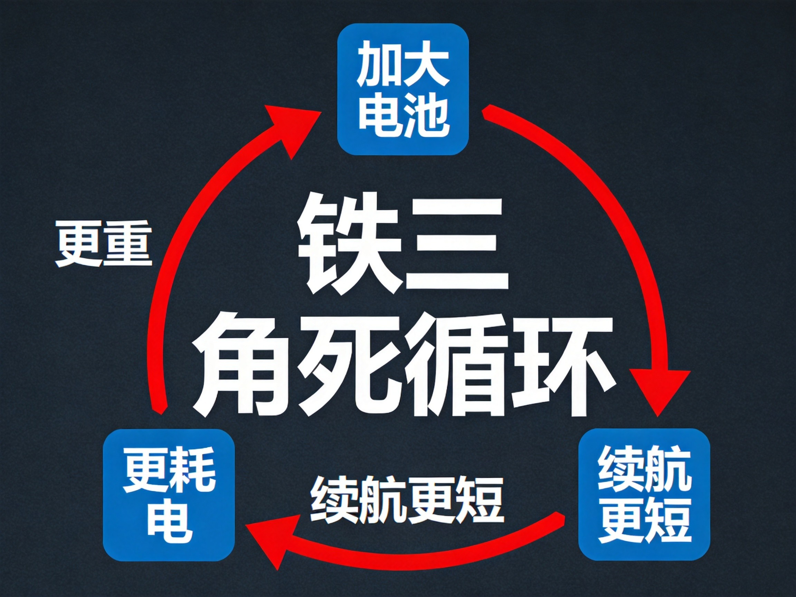

核心判断：中国机器人量产杀疯了，但物理定律不给面子——锂电池能量密度比人体代谢差一个数量级，90%能量变成热量，没有一台在售人形机器人能撑过8小时班次。来的是专用机器人，不是万能机器人。
2026年6月底到7月初，中国机器人赛道三条消息同时炸开：
宇树科技R1卖2.99万，比一辆五菱宏光还便宜。73天闪电过会科创板，估值420亿，拟募资42亿。2025年出货5500台全球第一，人形机器人毛利率62.91% [新浪财经]。
优必选U1首发订单破13361台，6月30日发布，Lite版11.98万/Ultra版99万，9月交付。88个自由度，90%基础动作覆盖，情绪识别准确率超90% [新华网]。
智元机器人第15000台下线，龙旗科技工厂6天×11小时全透明直播，8台机器人累计3.4万次作业，成功率99.99% [凤凰网]。
加上国家电网68亿采购8500台具身智能设备 [摩根士丹利研报]，工信部+国资委联合下文年底万台级部署 [新浪财经]——全网都在喊：机器人时代来了，你的工作危险了。
但上个月上海机器人展，亲眼看完，想法完全不一样。
爆米花机器人，一台20万。只能把爆米花铲到杯子里。加原料要人，递给客户要人，客户付没付钱它也不知道——根本没法独立服务，更别想24小时营业。20万投入，回本遥遥无期。
冰淇淋机器人看起来不错——一样的问题，价格太贵，场景撑不住。清洁机器人扫得挺干净——说白了就是大号扫地机器人。
大部分机器人，不是没用，是性价比不足。它们只能干"人能做但懒得做"的事，不能干"只有机器人能干"的事。

还有一个所有厂商都在回避的数字：
所有这些在售人形机器人，充一次电只能干2小时。
| 机型 | 电池容量 | 动态续航 | 来源 |
|---|---|---|---|
| 特斯拉Optimus Gen2 | 2.3kWh | ~2小时 | TrendForce/时代周报 |
| 宇树H1 | 0.86kWh | <3小时 | 宇树官方 |
| Figure F03 | 2.3kWh | 3-4小时 | Figure官方 |
| 优必选Walker S2 | — | ~2小时 | 电子工程专辑 |
| 优必选U1 | — | 2-4小时 | 电子工程专辑 |
2026年，没有一台在售商用人形机器人能单次充电完成8小时标准制造班次。人干8小时，机器人干2小时就得回去充电。

不是工程问题，是物理定律。人走路耗能约80W，人形机器人同等速度300-1500W——差了4到19倍 [快思慢想研究院田丰/CSDN]。
锂电池能量密度200-300Wh/kg，人体代谢约2000Wh/kg——差了接近一个数量级。这不是算法能优化掉的差距，是电化学和生物学的底层鸿沟。

那为什么不能简单加大电池？因为铁三角困境：
加大电池 → 自重增加 → 运动功耗增加 → 有效作业时间反降。
三条路全部堵死：
1. 加大电池：更重→更耗电→续航更短，死循环。
2. 高倍率电池：满足爆发力，但能量密度低，续航短。
3. 高能量密度电池：续航长，但撑不住峰值功率需求。
这不是工程问题，是电化学的铁律。
运行过程中约90%的能量转化为热量 [银轮股份/浙江日报]。"10℃法则"：温度每升高10℃，使用寿命缩短约50%。
膝关节等高负荷关节连续运动后电机温度可达120℃，导致永磁体退磁、扭矩精度骤降。躯干电池仓仅0.5-1立方分米，散热空间极度有限。
半马比赛中：前一公里正常，中后段纷纷姿态失衡、摔倒——"不是机械跟不上，是散热跟不上"（银轮股份覃小军）。
RaaS（机器人即服务）的核心逻辑是"机器人时间比人便宜"。但续航不足直接腐蚀这个逻辑：
Agility Robotics当前比例：2台运行:1台充电，有效利用率仅67%。按$30/h人工成本，ROI从2年延长至3年+ [时代周报]。
优必选1.3万台预售，定金3000可退，7月15日尾款才锁定真实转化——这个数字可能含水分。
固态电池？成本是液态电解液的数十到上百倍，一块电池可能比整台机器人还贵。而且双足行走的高频低幅震动会导致固态电解质内部结构失效 [时代周报]。
电池决定了机器人能坚持多久，散热决定了AI能跑多快——物理定律不给面子。大模型决定了机器人能做什么，电池决定了它能持续做多久。前者是天花板，后者是地板。地板撑不住，天花板就是空中楼阁。
有一类机器人，不存在性价比问题——危险作业机器人。
深海、高压、有毒、高温、高空，人做不了的，它们能做。核电站巡检、矿井探测、海上钻井平台维护——这些场景不是"替代人"，是"替代人不敢干的活"。
这种机器人，不是性价比问题，是刚需。这才是机器人正确的打开方式。
机器人时代来了，但来的不是"什么都会干的万能机器人"，来的是"特定场景下比人划算的专用机器人"。
对你的行业有没有用，比看热闹重要。看你的工作里有多少是"只有人能干的判断"，比看新闻重要。
方向比焦虑重要。
本文是"AI物理成本"系列第四弹，逻辑线从云端延伸到终端：
1. 散热篇：AI的电力账单
2. 电力篇：AI算力泡沫预警
3. 芯片篇：算力需求推高芯片/硬件成本
4. 续航篇（本篇）：物理定律给机器人画了一条线——电池/散热/能耗，决定"能坚持多久"
从云端（数据中心散热→电力→芯片）到终端（机器人续航→散热→能耗），物理成本无处不在。AI的每一个环节，都在和物理定律做交易。
| 数据项 | 数值 | 来源 | 级别 |
|---|---|---|---|
| 宇树R1售价2.99万 | 2.99万元 | 新浪财经 | B |
| 宇树73天过会/420亿估值 | 420亿 | 潮新闻/新浪财经 | B |
| 优必选U1订单13361台 | 13361台 | 澎湃/新华网 | B |
| 智元第15000台下线/99.99% | 15000台 | 凤凰网/和讯网 | B |
| 国家电网68亿采购8500台 | 68亿 | 摩根士丹利研报 | B |
| 工信部+国资委万台级部署 | — | 川观新闻/经济日报 | A |
| 各机型续航数据 | 2-4小时 | TrendForce/时代周报 | B |
| 人80W vs 机器人300-1500W | 4-19倍 | 田丰/CSDN | B |
| 锂电池200-300 vs 人体2000 Wh/kg | ~10倍 | 行业研报 | B |
| 90%能量转化为热量 | 90% | 银轮股份/浙江日报 | B |
| 半马机器人中后段摔倒 | — | 新华社/银轮股份 | B |
| Agility 2:1充放比/ROI 3年+ | 67%利用率 | 时代周报 | B |
| 关节温度120℃/永磁体退磁 | 120℃ | CSDN技术解析 | B |
数据来源分级：A级=官方财报/权威机构；B级=主流财经媒体/官方平台。C级数据本篇未直接引用。